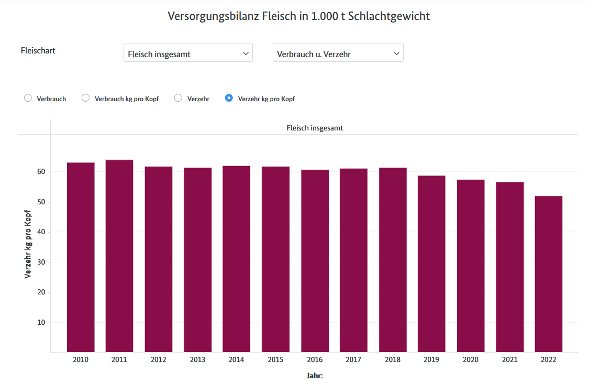
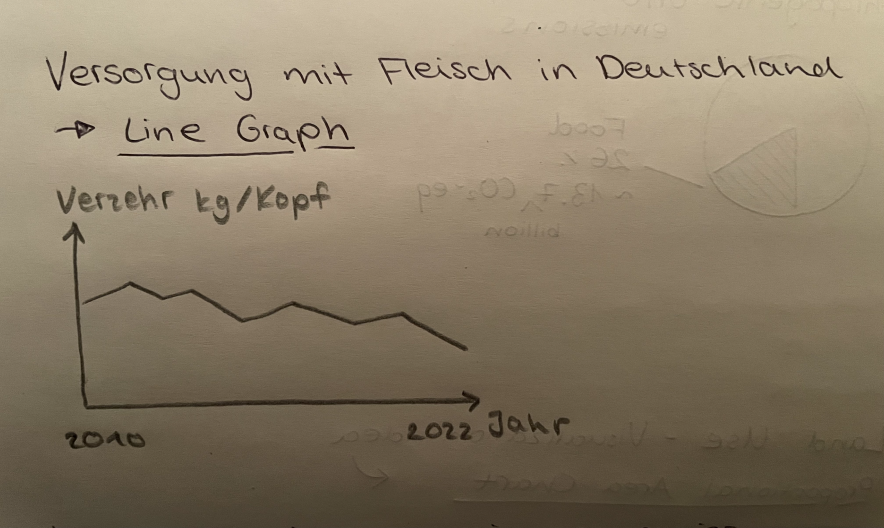
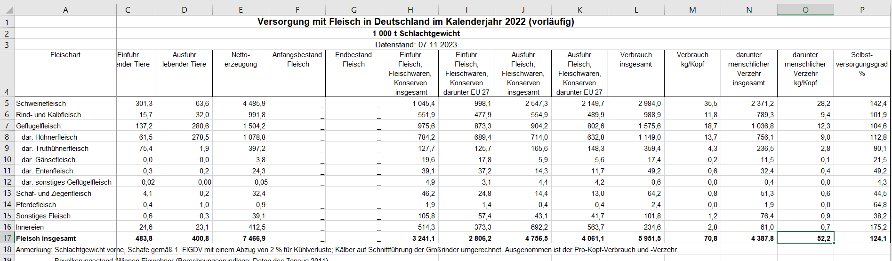
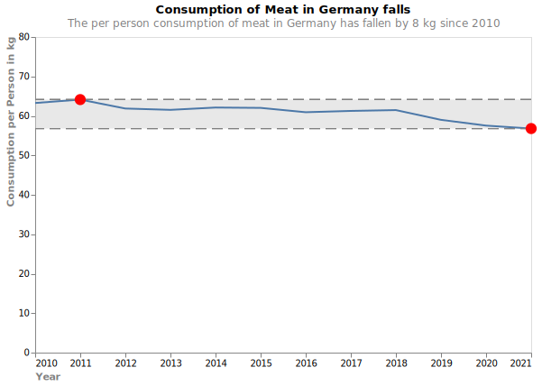
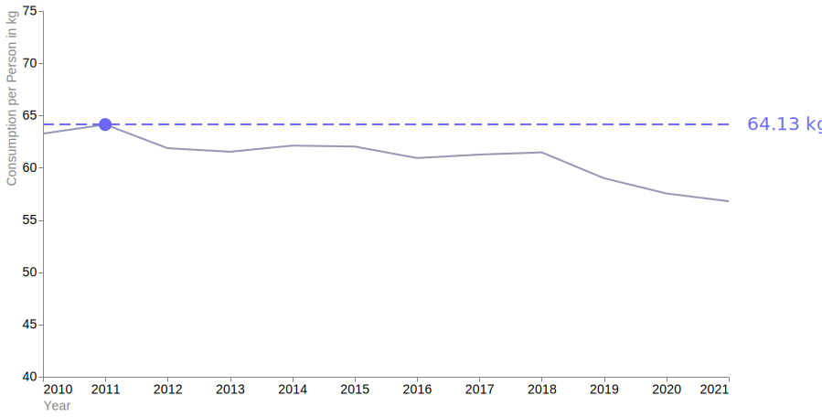
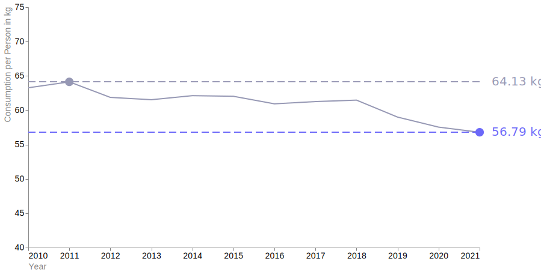
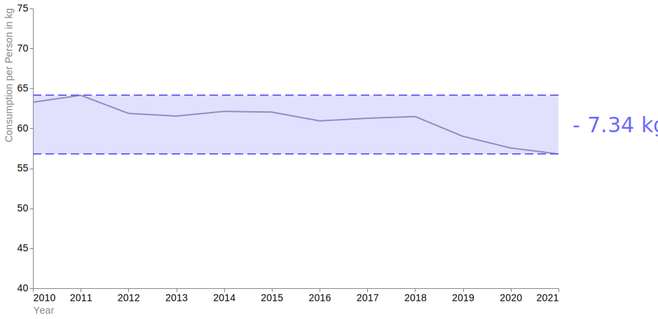

Meat Consumption
Source: Bundesministerium für Ernährung und Landwirtschaft (BMEL)
The german federal ministry of food and agriculture provides a data set regarding production and consumption of meat in germany, as well as trade data from imports and exports of animals.
Explorative Data Analysis
Interesting metric: “Verzehr pro Kopf” - the consumption of meat per person and year. After taking a look at the data and the on the website provided visualizations, it is apparent the the consumption of meat per person falls, which supports my point.
Visualization on the Website of the BMEL: 
→ I think the choosen bar plot visualization here is not ideal. A line graph where max and min values can be shown via points on the graph could provide a clearer and not so cluttered appearance.
First Visualization ideas
Line Graph

Line Graph to show the Consumption of Meat in Germany
Implemention:
- Importing the data set from the BMEL, I encountered a problem:

# Problem: the years are on different excel sheets
# get sheet names
sheet_names = list(df.keys())
Output:
['2022',
'2021',
'2020',
'2019',
'2018',
'2017',
'2016',
'2015',
'2014',
'2013',
'2012',
'2011',
'2010',
'Dokumentation']Manually, I located where the values I need (consumption per Person) are found in the table layout
Together with Copilot, I created a new df where the sheet name is in one column (Year) and the Consumption per Person in the other
# create a new df dictionary without sheet 'Dokumentation'
dfs = pd.read_excel('original-data/versorgungsbilanz-fleisch.xlsx', sheet_name= sheet_names, skiprows=3, skipfooter=8)
# initialize empty list for consumption per person
consumption = []
# help from Copilot
for sheet_names, df in dfs.items():
# Extract the value at the first row and first column
value = df.iloc[12, 14]
# Append the value and the sheet name to the list
consumption.append((sheet_names, value))
# Create a new DataFrame from the list
df_consumption = pd.DataFrame(consumption, columns=['Year', 'Consumption per Person'])| Year | Consumption per Person |
|---|---|
| 2022 | 52.186567 |
| 2021 | 56.786586 |
| 2020 | 57.538436 |
| 2019 | 58.998437 |
| 2018 | 61.467405 |
| 2017 | 61.256313 |
Converting Year to datetime and rounding the consumption per person to 2 decimals
Saving the df in the cleaned-data folder
Plotting the basic line chart
line_chart = alt.Chart(df_consumption,
title=alt.Title(
'Consumption of Meat in Germany falls',
subtitle='The per person consumption of meat in Germany has fallen by 8 kg since 2010',
subtitleColor= 'grey',
)
).mark_line().encode(
x=alt.X('Year:T').axis(
title = "Year",
titleColor = 'grey',
titleAnchor='start',
labelAngle = 0,
grid = False,
tickColor= 'grey',
format = '%Y'),
y= alt.Y('Consumption per Person').scale(domain=(30, 80)).axis(
title ='Consumption per Person in kg',
titleColor= 'grey',
titleAnchor='end',
grid = False,
tickColor= 'grey',
),
strokeWidth = alt.value(2)
).properties(
width = 550,
height = 350
)- To focus the attention: creating 2 points and a dotted line for the min and max consumption values and an area to visualize the decline of meat consumption

- In Quarto presentation: To implement the Data Storytelling Principles, I slowly built the chart up (frist sceleton chart, then line graph, first point at max value and label, second point at min point and label, area and label) Element which were not relevant for the current side got a grey color.
Final Chart(s):


